You picked comp A. The seven other projects are now on the walnut board, below the featured three on /work (/work#archive, where the old /archive lands). The section is titled "Other Projects", and each project opens its own page. Stills are from the dev build at 2×.
The questions are in the review doc.
Reading a row, by hover or focus, lifts its piece into its own light, and the lamp eases down a little. The tags come up with the lamp as the board scrolls into view.
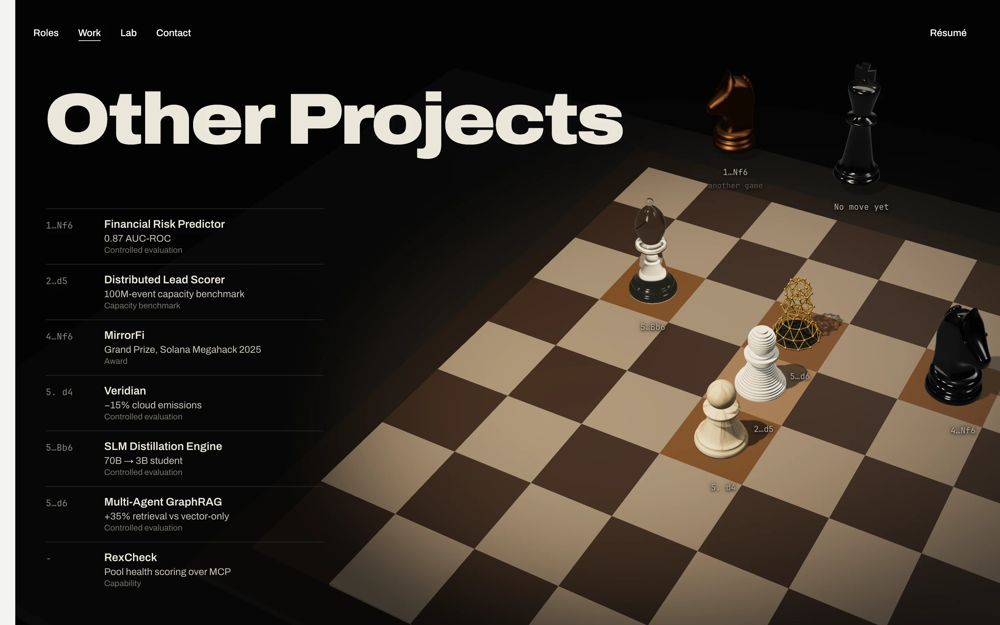
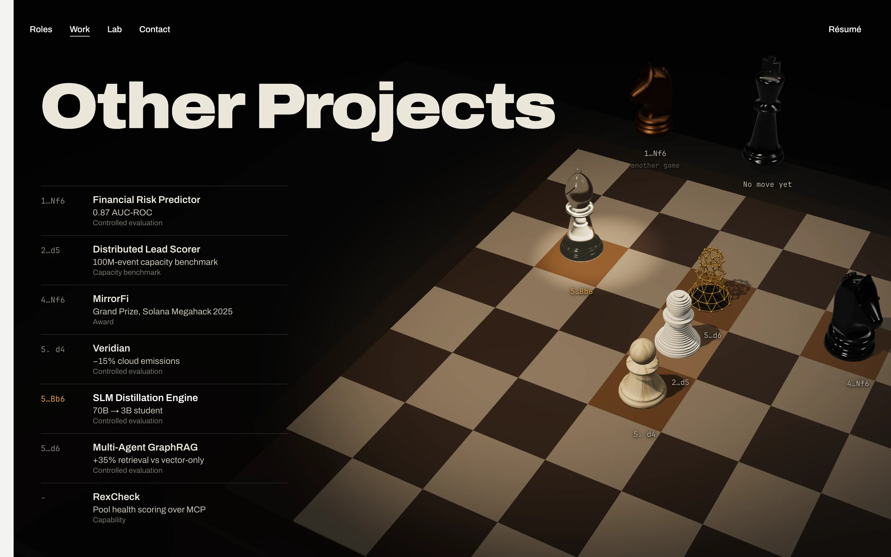
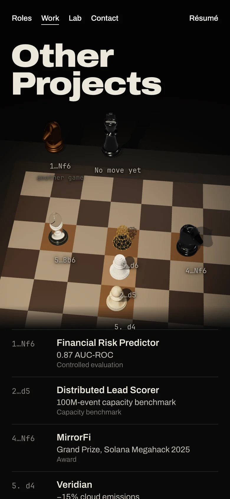
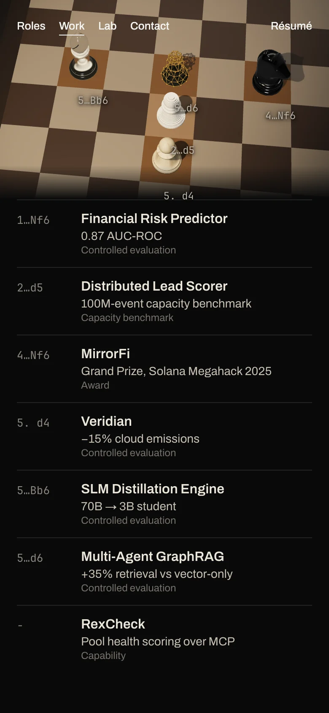
The camera steps down to the knight while the rest of the set fades and the type leaves. The knight turns to its page's angle, and the page is cut in on landing, as from the gallery. The frames are from 0 to 3.6 s.
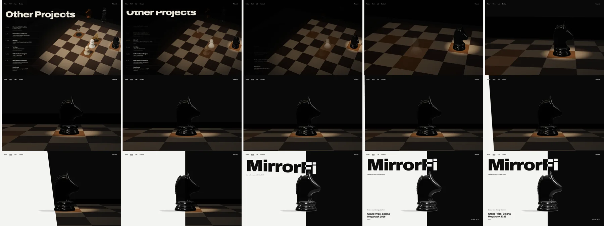
Each page rests its seam at its own move's eval. RexCheck has no move, so its page rests level, at 50%.
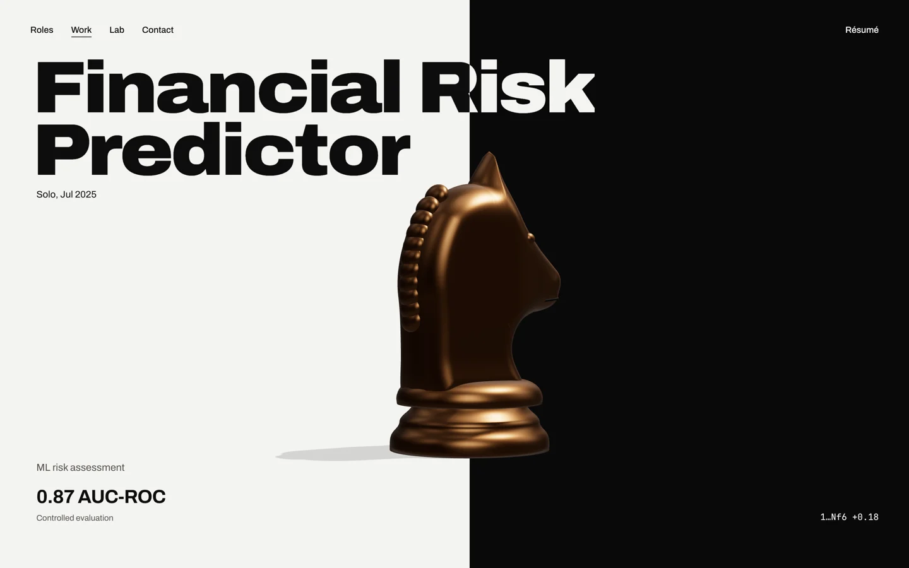
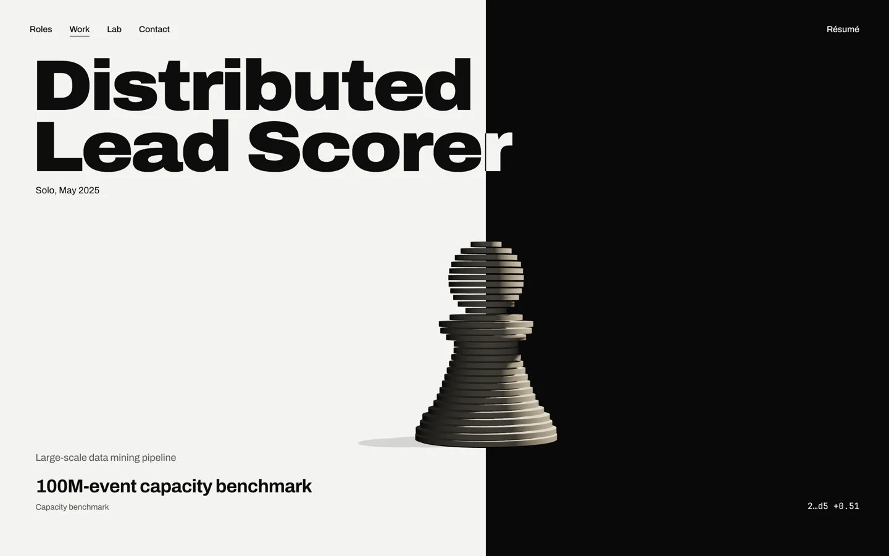
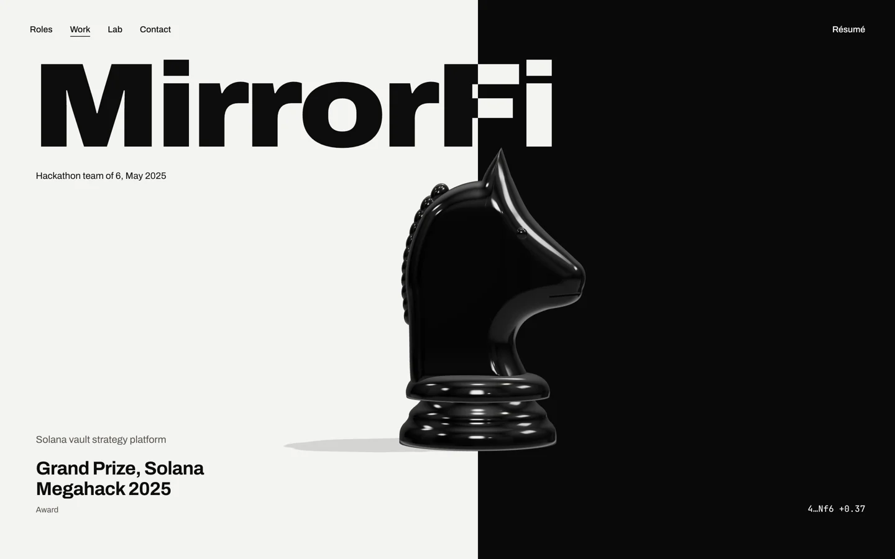
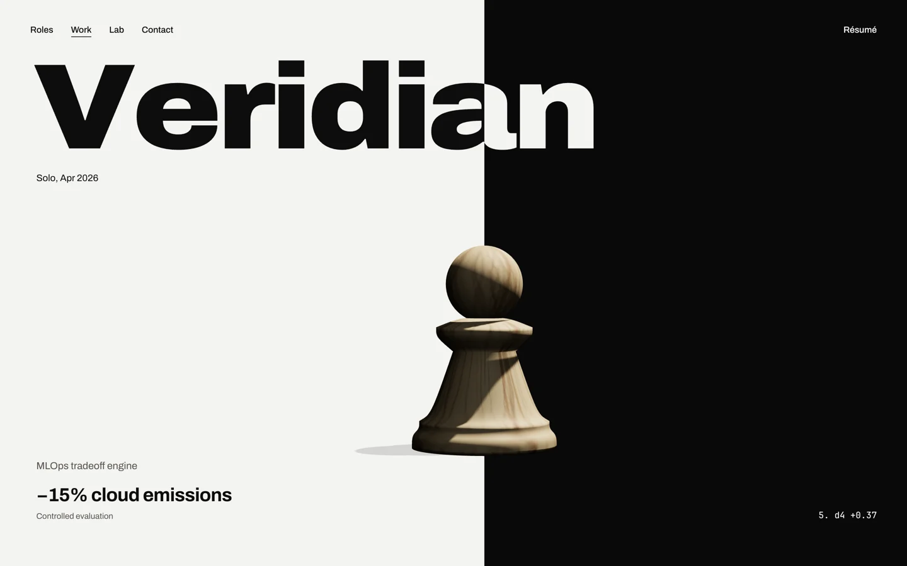
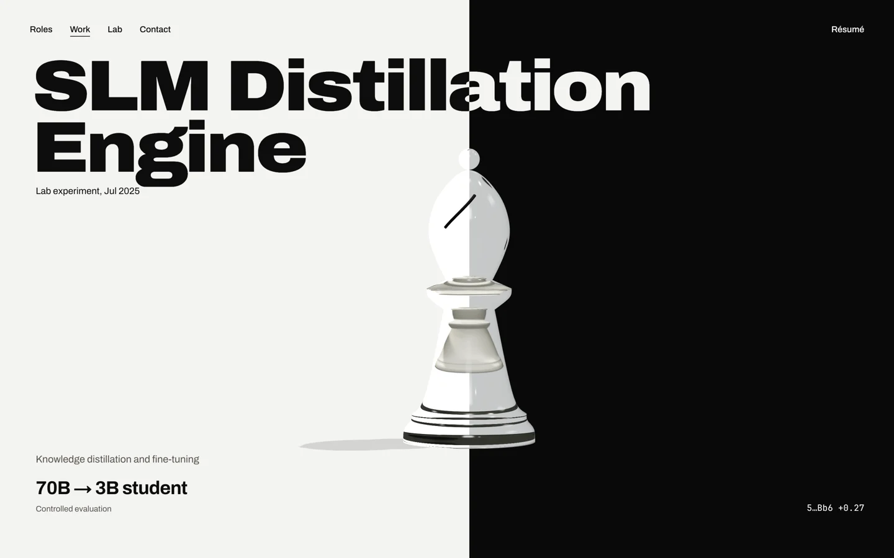
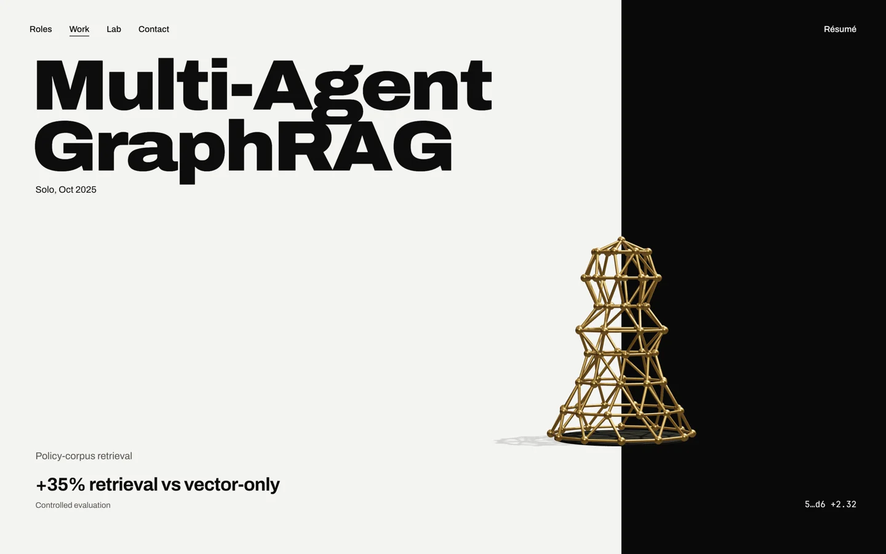
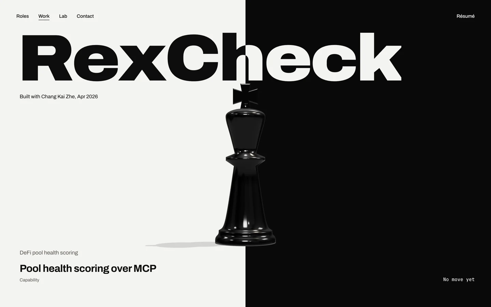
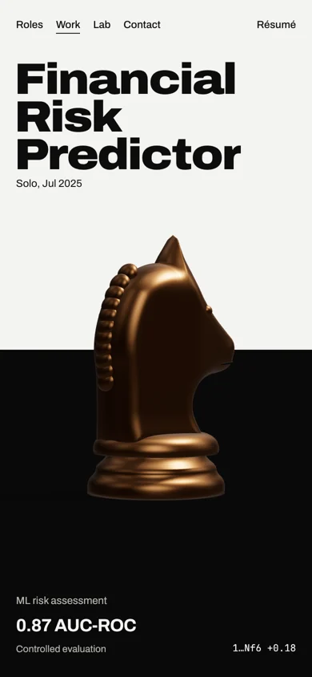
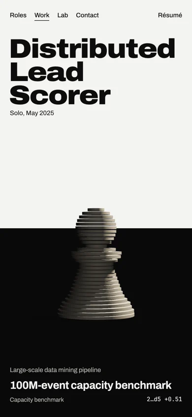
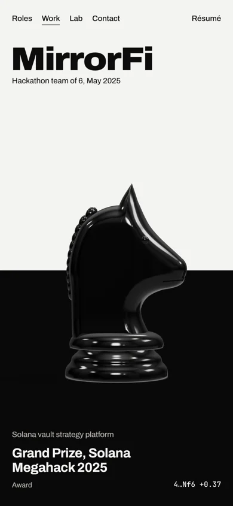
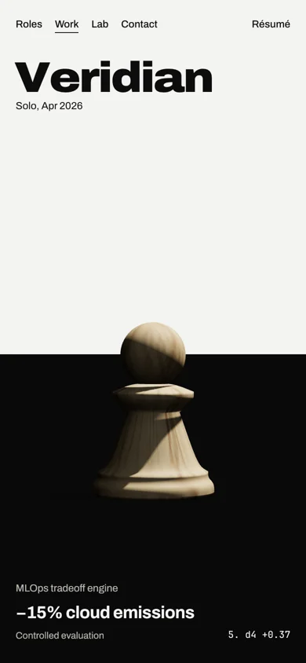
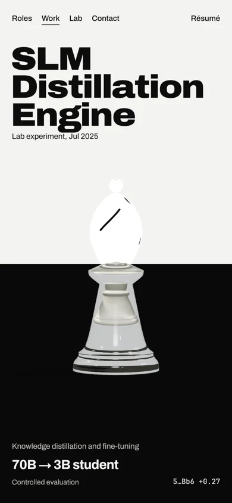
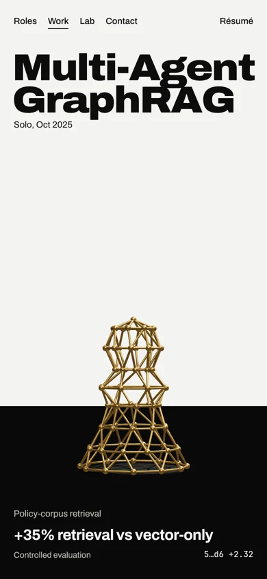
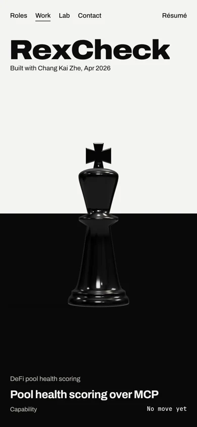
The case study shows only the sections each project has in content.json. None of the seven has a cover or screenshots yet.
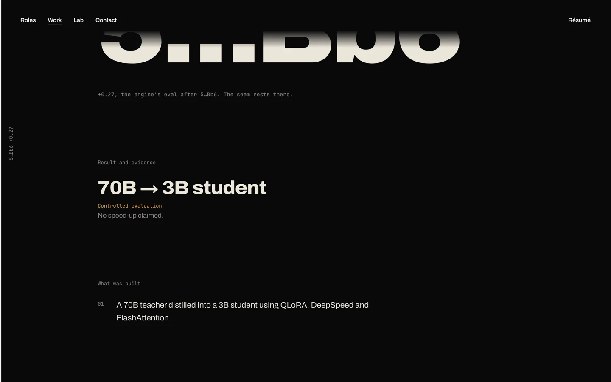